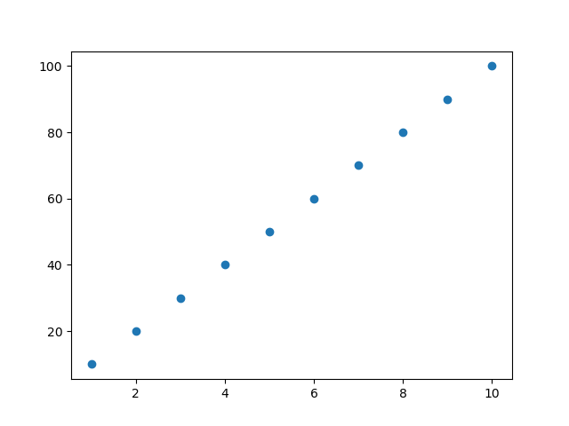
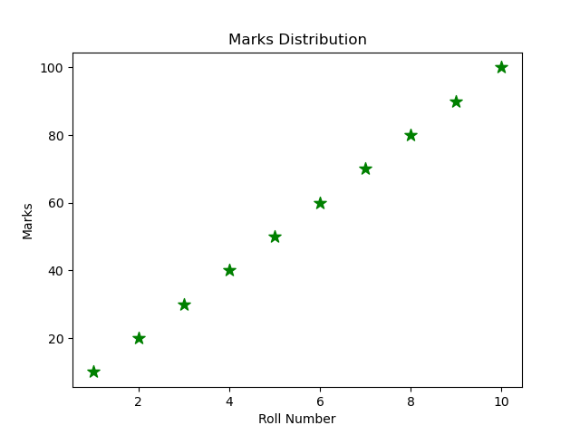
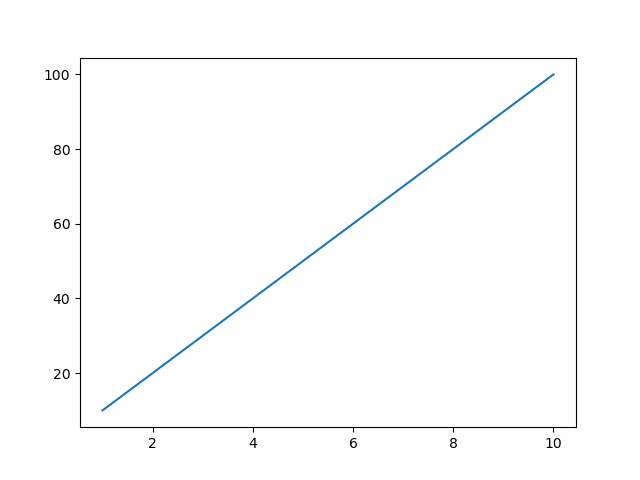
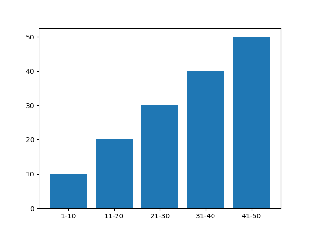
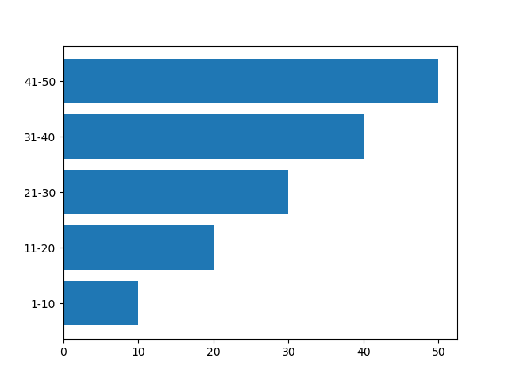
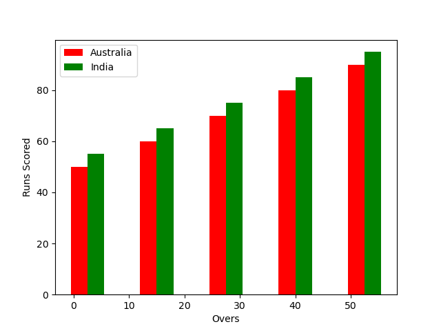
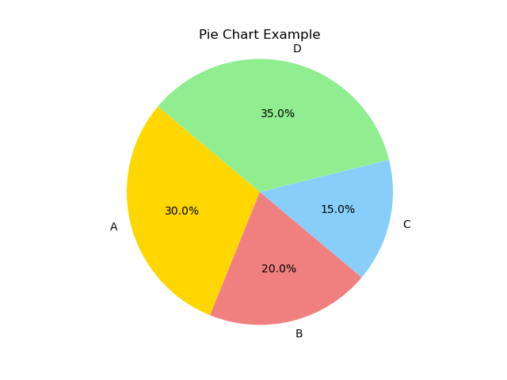
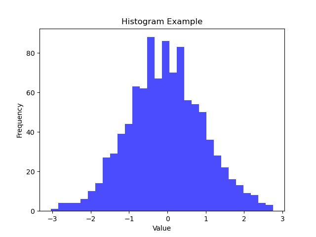
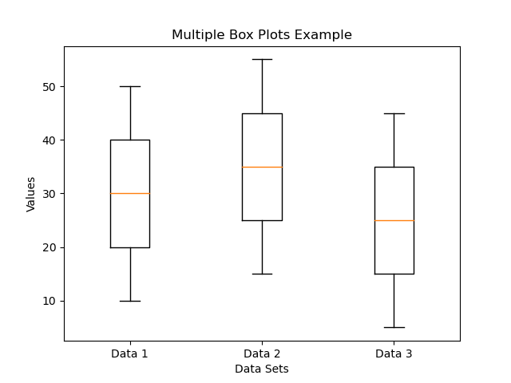

import numpy as np.
pip install numpy
import numpy as np
# Creating a 1D array
a = np.array([1, 2, 3, 4])
print(a)
The above code creates a 1D array and prints it.
Taking elements from the user and printing them:
import numpy as np
# Taking input from the user
n = int(input("Enter the number of elements in the array: "))
elements = []
for i in range(n):
element = int(input(f"Enter element {i + 1}: "))
elements.append(element)
# Converting the list of elements to a NumPy array
elements_array = np.array(elements)
print("The created array is:", elements_array)
The above code takes the number of elements and each element from the user to create an array and then prints the array. It prompts the user to enter the number of elements in the array, then iteratively takes each element as input, appends it to a list, converts the list to a NumPy array, and prints the resulting array.
1. Creating a 1D array:
import numpy as np
# Creating a 1D array using np.array()
a_1d = np.array([1, 2, 3, 4, 5])
print("1D Array:")
print(a_1d)
2. Creating a 2D array:
# Creating a 2D array using np.array()
a_2d = np.array([[1, 2, 3], [4, 5, 6]])
print("2D Array:")
print(a_2d)
3. Creating an 3D array:
# Creating an N-dimensional array using np.array()
a_nd = np.array([[[1, 2], [3, 4]], [[5, 6], [7, 8]]])
print("3D Array:")
print(a_nd)
The above code demonstrates creating 1D, 2D, and 3D arrays in NumPy using the np.array() function. You can specify the elements of the array as nested lists, with each list representing a row in a 2D array or a higher-dimensional structure in N-dimensional arrays.
1- Zero Array
import numpy as np
# Creating a 1D zero array of length 3
print(np.zeros(3))
# Creating a 2D zero array of shape (3, 3)
print(np.zeros((3, 3)))
Output:
[0. 0. 0.]
[[0. 0. 0.]
[0. 0. 0.]
[0. 0. 0.]]
The np.zeros() function creates an array filled with zeros. When used with a single argument, it creates a 1D array of zeros with the specified length. When used with a tuple specifying the shape, it creates a multi-dimensional array (in this case, a 2D array) filled with zeros.
2. Ones Array: An array where all elements are ones.
import numpy as np
# Creating a 1D ones array of length 3
print(np.ones(3))
# Creating a 2D ones array of shape (3, 3)
print(np.ones((3, 3)))
Output:
[1. 1. 1.]
[[1. 1. 1.]
[1. 1. 1.]
[1. 1. 1.]]
3. Full Array: An array filled with a specified value.
# Creating a 1D full array of length 3 filled with 5
print(np.full(3, 5))
# Creating a 2D full array of shape (3, 3) filled with 7
print(np.full((3, 3), 7))
Output:
[5 5 5]
[[7 7 7]
[7 7 7]
[7 7 7]]
4. Identity Matrix: A square matrix with ones on the diagonal and zeros elsewhere.
# Creating a 3x3 identity matrix
print(np.eye(3))
Output:
[[1. 0. 0.]
[0. 1. 0.]
[0. 0. 1.]]
5. Range Array: An array of evenly spaced values within a specified range.
# Creating a range array from 0 to 5 (exclusive) with a step of 1
print(np.arange(0, 5, 1))
# Creating a range array from 0 to 10 (exclusive) with a step of 2
print(np.arange(0, 10, 2))
Output:
[0 1 2 3 4]
[0 2 4 6 8]
1. ndim: The ndim attribute returns the number of dimensions (axes) of the array.
import numpy as np
# Creating a NumPy array
a = np.array([[1, 2, 3], [4, 5, 6]])
# Using ndim attribute to get the number of dimensions
num_dimensions = a.ndim
print("Number of dimensions:", num_dimensions)
The ndim attribute in this example will return 2, indicating that the array 'a' is a 2-dimensional array.
2. shape: The shape attribute returns a tuple representing the shape of the array.
# Using shape attribute to get the shape of the array
array_shape = a.shape
print("Shape of the array:", array_shape)
The shape attribute will return (2, 3), indicating that the array 'a' has 2 rows and 3 columns.
3. size: The size attribute returns the total number of elements in the array.
# Using size attribute to get the total number of elements
array_size = a.size
print("Size of the array:", array_size)
The size attribute will return 6, indicating that the array 'a' contains 6 elements.
4. dtype: The dtype attribute returns the data type of the elements in the array.
# Using dtype attribute to get the data type of elements
array_dtype = a.dtype
print("Data type of the array:", array_dtype)
The dtype attribute will return int64, indicating that the elements in the array 'a' are of type integer with 64-bit precision.
These attributes provide valuable information about the structure, size, and data type of NumPy arrays, allowing for effective manipulation and analysis of array data.
When performing operations or combining arrays with different data types in NumPy, there is a concept called "upcasting" where NumPy automatically converts the data types of the arrays to a common data type to ensure consistency.
Example:
import numpy as np
# Creating arrays with different data types
a = np.array([1, 2, 3])
b = np.array([1.1, 2.2, 3.3])
# Performing an operation that requires upcasting
c = a + b
print("Array a (int):", a)
print("Array b (float):", b)
print("Array c (upcasted):", c)
print("Data type of array c:", c.dtype)
In this example, array 'a' has integer elements, and array 'b' has floating-point elements. When we perform the addition operation (a + b), NumPy automatically upcasts the elements of array 'a' to float64 to match the data type of array 'b', resulting in array 'c' with elements of type float64.
The output will show the arrays and their data types, confirming the upcasting that occurred during the operation.
Understanding upcasting is important when working with mixed data types in NumPy arrays to ensure correct results and avoid unexpected behavior due to data type inconsistencies.
NumPy arrays can handle mixed data types, but it's essential to understand how NumPy treats these mixed types, especially during operations and array creation.
Example 1: Integer and Float Elements
import numpy as np
# Creating an array with integer and float elements
mixed_array = np.array([2, 3, 4.4, 4, 3])
print("Mixed-type array:", mixed_array)
print("Data type of the array:", mixed_array.dtype)
Output:
Mixed-type array: [2. 3. 4.4 4. 3. ]
Data type of the array: float64
In this example, the array contains both integers and floats. NumPy automatically upcasts the integers to floating-point numbers to maintain consistency in operations, resulting in the entire array being of data type float64.
Example 2: Integer and String Elements
# Creating an array with integer and string elements
mixed_array = np.array([3, 4, 5, '6', 4])
print("Mixed-type array:", mixed_array)
print("Data type of the array:", mixed_array.dtype)
Output:
Mixed-type array: ['3' '4' '5' '6' '4']
Data type of the array: <U21
Here, the array contains integers and a string. NumPy upcasts the entire array to a string data type (<U21) because of the presence of a string element, ensuring consistency in the array's data type.
Understanding how NumPy handles mixed data types is crucial for avoiding unexpected behavior and ensuring correct data processing in array operations and manipulations.
import numpy as np
# Create a 1D array
arr = np.array([1, 2, 3])
# Increase the dimension of the array to 5 using ndmin argument
ndimarray = np.array(arr, ndmin=5)
# Print the shape of the new array
print(ndimarray.shape)
import numpy as np
random_floats = np.random.rand(3) # Generates an array of 3 random floats
print(random_floats)
Output:
[0.37454012 0.95071431 0.73199394]
random_integers = np.random.randint(1, 10, size=5) # Generates an array of 5 random integers between 1 and 9
print(random_integers)
Output:
[8 1 5 9 3]
random_array = np.random.rand(2, 3) # Generates a 2x3 array of random floats
print(random_array)
Output:
[[0.59865848 0.15601864 0.15599452]
[0.05808361 0.86617615 0.60111501]]
random_int_array = np.random.randint(1, 100, size=(2, 3)) # Generates a 2x3 array of random integers between 1 and 99
print(random_int_array)
Output:
[[12 84 56]
[78 60 38]]
import numpy as np
# Create a 1D array with values from 1 to 50
a = np.arange(1, 51)
# Reshape the 1D array to a 2D array with 10 rows and 5 columns
a = a.reshape(10, 5)
a = np.arange(1, 51) will create a 1D array that starts
from 1 and goes up to 50 as
follows:
[1, 2, 3, ..., 50]
a.reshape(10, 5) will reshape the 1D array into a 2D array
with 10 rows and 5
columns as follows:
[[ 1, 2, 3, 4, 5],
[ 6, 7, 8, 9, 10],
[11, 12, 13, 14, 15],
[16, 17, 18, 19, 20],
[21, 22, 23, 24, 25],
[26, 27, 28, 29, 30],
[31, 32, 33, 34, 35],
[36, 37, 38, 39, 40],
[41, 42, 43, 44, 45],
[46, 47, 48, 49, 50]]
Now, let's perform some indexing and slicing operations on the 2D array:
print(a[0])
Output:
[ 1, 2, 3, 4, 5]
print(a[2])
Output:
[11, 12, 13, 14, 15]
print(a[0, 0])
Output:
1
print(a[3, 4])
Output:
20
print(a[2:5])
Output:
[[11, 12, 13, 14, 15],
[16, 17, 18, 19, 20],
[21, 22, 23, 24, 25]]
print(a[0:10])
Output:
[[ 1, 2, 3, 4, 5],
[ 6, 7, 8, 9, 10],
[11, 12, 13, 14, 15],
[16, 17, 18, 19, 20],
[21, 22, 23, 24, 25],
[26, 27, 28, 29, 30],
[31, 32, 33, 34, 35],
[36, 37, 38, 39, 40],
[41, 42, 43, 44, 45],
[46, 47, 48, 49, 50]]
If we provide 0:100, this will also work because we are asking for a range
that exceeds the actual number of rows in the array. NumPy handles this gracefully by
returning all available rows.
print(a[:, 2])
Output:
[ 3, 8, 13, 18, 23, 28, 33, 38, 43, 48]
print(a[2:5, 4])
Output:
[15, 20, 25]
print(a[:, :])
Output:
[[ 1, 2, 3, 4, 5],
[ 6, 7, 8, 9, 10],
[11, 12, 13, 14, 15],
[16, 17, 18, 19, 20],
[21, 22, 23, 24, 25],
[26, 27, 28, 29, 30],
[31, 32, 33, 34, 35],
[36, 37, 38, 39, 40],
[41, 42, 43, 44, 45],
[46, 47, 48, 49, 50]]
print(a[:, 2:5])
Output:
[[ 3, 4, 5],
[ 8, 9, 10],
[13, 14, 15],
[18, 19, 20],
[23, 24, 25],
[28, 29, 30],
[33, 34, 35],
[38, 39, 40],
[43, 44, 45],
[48, 49, 50]]
print(a[:, 2:].dtype)
Output:
dtype('int64')
Installation
pip install pandas
import pandas as pd
A data structure is a way to arrange the data so it can be accessed quickly and we can perform various operations on this data like retrieval, deletion, modification, etc.
Pandas deals with three data structures:
A Series is a one-dimensional array-like structure with homogeneous data, which can be used to handle and manipulate data. What makes it special is its index attribute, which has incredible functionality and is heavily mutable.
It has two parts:
For example:
Index Data
0 10
1 15
2 18
3 22
lst = [1, 2, 3, 4, 5, 6]
print(lst)
Output:
[1, 2, 3, 4, 5, 6]
There are some advantages of Series over lists:
We can create a Series using a list:
import pandas as pd
series = pd.Series(lst)
print(series)
print(type(series))
Output:
0 1
1 2
2 3
3 4
4 5
5 6
dtype: int64
<class 'pandas.core.series.Series'>
data = {'a': 10, 'b': 20, 'c': 30}
series_dict = pd.Series(data)
print(series_dict)
Output:
a 10
b 20
c 30
dtype: int64
empty = pd.Series([])
print(empty)
Output:
Series([], dtype: float64)
a = pd.Series(['p', 'q', 'r', 's', 't'], index=[10, 11, 12, 13, 14])
print(a)
Output:
10 p
11 q
12 r
13 s
14 t
dtype: object
a = pd.Series(['p', 'q', 'r', 's', 't'], index=[10, 11, 12, 13, 14], name="alphabets")
print(a)
Output:
10 p
11 q
12 r
13 s
14 t
Name: alphabets, dtype: object
scalar_series = pd.Series(0.5)
print(scalar_series)
Output:
0 0.5
dtype: float64
scalar_series = pd.Series(0.5, index=[1, 2, 3])
print(scalar_series)
Output:
1 0.5
2 0.5
3 0.5
dtype: float64
Creating a Series using a dictionary:
import pandas as pd
dict_series = pd.Series({'p': 1, 'q': 2, 'r': 3, 's': 4, 't': 5})
print(dict_series)
Output:
p 1
q 2
r 3
s 4
t 5
dtype: int64
print(dict_series[0])
Output:
1
print(dict_series[0:3])
Output:
p 1
q 2
r 3
dtype: int64
print(max(dict_series))
Output:
5
dict_series = pd.Series({'p': [1, 5, 6], 'q': [2, 6, 7], 'r': [3, 7, 8], 's': [4, 8, 9], 't': [5, 9, 10]})
print(dict_series)
Output:
p [1, 5, 6]
q [2, 6, 7]
r [3, 7, 8]
s [4, 8, 9]
t [5, 9, 10]
dtype: object
Pandas Series supports various mathematical operations. These operations are performed element-wise and are very similar to numpy array operations. Let's discuss the common mathematical operations using a single program.
import pandas as pd
import numpy as np
# Creating a Series
series = pd.Series([10, 20, 30, 40, 50])
# Multiplication by a scalar
multiplication = series * 2
# Square of each element
square = series ** 2
# Filtering values greater than 25
greater_than_25 = series[series > 25]
print("Original Series:")
print(series)
print("\nMultiplication by 2:")
print(multiplication)
print("\nSquare of each element:")
print(square)
print("\nValues greater than 25:")
print(greater_than_25)
Original Series:
0 10
1 20
2 30
3 40
4 50
dtype: int64
Multiplication by 2:
0 20
1 40
2 60
3 80
4 100
dtype: int64
Square of each element:
0 100
1 400
2 900
3 1600
4 2500
dtype: int64
Values greater than 25:
2 30
3 40
4 50
dtype: int64
import pandas as pd
import numpy as np
# Creating two Series
series1 = pd.Series([10, 20, 30, 40, 50])
series2 = pd.Series([5, 10, 15, 20, 25])
# Addition
addition = series1 + series2
# Subtraction
subtraction = series1 - series2
# Multiplication
multiplication = series1 * series2
# Division
division = series1 / series2
# Exponentiation
exponentiation = series1 ** 2
# Modulus
modulus = series1 % 3
print("Series 1:")
print(series1)
print("\nSeries 2:")
print(series2)
print("\nAddition:")
print(addition)
print("\nSubtraction:")
print(subtraction)
print("\nMultiplication:")
print(multiplication)
print("\nDivision:")
print(division)
print("\nExponentiation:")
print(exponentiation)
print("\nModulus:")
print(modulus)
Series 1:
0 10
1 20
2 30
3 40
4 50
dtype: int64
Series 2:
0 5
1 10
2 15
3 20
4 25
dtype: int64
Addition:
0 15
1 30
2 45
3 60
4 75
dtype: int64
Subtraction:
0 5
1 10
2 15
3 20
4 25
dtype: int64
Multiplication:
0 50
1 200
2 450
3 800
4 1250
dtype: int64
Division:
0 2.0
1 2.0
2 2.0
3 2.0
4 2.0
dtype: float64
Exponentiation:
0 100
1 400
2 900
3 1600
4 2500
dtype: int64
Modulus:
0 1
1 2
2 0
3 1
4 2
dtype: int64
Pandas Series provides the head() and tail() functions to easily view a subset of the data. These functions are useful for quickly inspecting the beginning and end of a Series.
import pandas as pd
# Creating a Series
series = pd.Series([10, 20, 30, 40, 50, 60, 70, 80, 90, 100])
# Using the head() function
head_default = series.head()
head_custom = series.head(3)
# Using the tail() function
tail_default = series.tail()
tail_custom = series.tail(3)
print("Original Series:")
print(series)
print("\nFirst 5 elements (head - default):")
print(head_default)
print("\nFirst 3 elements (head - custom):")
print(head_custom)
print("\nLast 5 elements (tail - default):")
print(tail_default)
print("\nLast 3 elements (tail - custom):")
print(tail_custom)
Original Series:
0 10
1 20
2 30
3 40
4 50
5 60
6 70
7 80
8 90
9 100
dtype: int64
First 5 elements (head - default):
0 10
1 20
2 30
3 40
4 50
dtype: int64
First 3 elements (head - custom):
0 10
1 20
2 30
dtype: int64
Last 5 elements (tail - default):
5 60
6 70
7 80
8 90
9 100
dtype: int64
Last 3 elements (tail - custom):
7 80
8 90
9 100
dtype: int64
This program demonstrates how to use the head() and tail() functions to inspect the beginning and end of a pandas Series.
Pandas Series provides various methods for selecting data, including loc, iloc, and using index or range.
The loc function is used to access a group of rows and columns by labels or a boolean array.
Example:
import pandas as pd
data = {'A': 10, 'B': 20, 'C': 30, 'D': 40}
series = pd.Series(data)
print(series.loc['B']) # Access element with label 'B'
print(series.loc['B':'D']) # Access elements from 'B' to 'D' (inclusive)
The iloc function is used for integer-location based indexing, i.e., accessing elements by integer position.
Example:
print(series.iloc[1]) # Access element at index 1
print(series.iloc[1:3]) # Access elements from index 1 to 2 (exclusive)
You can also select data using square brackets with index or range.
series[-index]: Access an element using negative indexing.Example:
import pandas as pd
# Creating a Series with labels
label_data = {'A': 10, 'B': 20, 'C': 30, 'D': 40}
label_series = pd.Series(label_data)
# Creating a Series with integer indices
index_data = [10, 20, 30, 40]
index_series = pd.Series(index_data)
# Access element with label 'B'
print(label_series['B']) # Output: 20
# Access range of elements from 'B' to 'D' (inclusive)
print(label_series['B':'D']) # Output:
# B 20
# C 30
# D 40
# Access element at index 1
print(index_series[1]) # Output: 20
# Access elements from index 1 to 2 (exclusive)
print(index_series[1:3]) # Output:
# 1 20
# 2 30
# Access element using negative indexing
print(index_series[-1]) # Output: 40
Slicing in Pandas Series allows you to extract a subset of data based on labels or integer positions.
Examples:
# Original Series
s = pd.Series([1, 2, 3, 4, 5, 6, 7, 8, 9, 10])
# Slice from index 1 to 5 with step 2 (1, 3, 5)
print(s[1:6:2])
# Slice from index 0 to 8 with step 3 (0, 3, 6)
print(s[:9:3])
# Slice from index 2 to end with step 1 (2, 3, 4, 5, 6, 7, 8, 9, 10)
print(s[2::])
# Slice from start to end with step 2 (1, 3, 5, 7, 9)
print(s[::2])
import pandas as pd
# Initialize the DataFrame object
data = {
'Name': ['John', 'Anna', 'Peter', 'Linda'],
'Age': [28, 24, 35, 32],
'Date_of_Birth': ['1996-05-24', '1999-03-17', '1988-12-05', '1991-08-12']
}
df = pd.DataFrame(data)
print(df)
Output:
Name Age Date_of_Birth
0 John 28 1996-05-24
1 Anna 24 1999-03-17
2 Peter 35 1988-12-05
3 Linda 32 1991-08-12
Example:
import pandas as pd
df = pd.DataFrame()
print(df)
Output:
Empty DataFrame
Columns: []
Index: []
lst = [1, 2, 3, 4, 5]
df = pd.DataFrame(lst)
print(df)
Output:
0
0 1
1 2
2 3
3 4
4 5
lst = [[1, 2, 3, 4, 5], [11, 12, 13, 14, 15]]
df = pd.DataFrame(lst)
print(df)
Output:
0 1 2 3 4
0 1 2 3 4 5
1 11 12 13 14 15
a = [{'a': 5, 'b': 7, 'c': 9, 'd': 2},
{'a': 4, 'b': 8, 'c': 19, 'd': 12}] # dictionary keys represent column names
df = pd.DataFrame(a)
print(df)
Output:
a b c d
0 5 7 9 2
1 4 8 19 12
b = {'RollNo.': pd.Series([1, 2, 3, 4, 5]),
'Maths': pd.Series([67, 89, 23, 90, 56]),
'Physics': pd.Series([12, 98, 44, 90, 78])}
df = pd.DataFrame(b)
print(df)
Output:
RollNo. Maths Physics
0 1 67 12
1 2 89 98
2 3 23 44
3 4 90 90
4 5 56 78
If we want to access records or data from a DataFrame row-wise or column-wise, we can use iteration. Pandas provides two functions for iterations:
Example of creating a DataFrame and iterating over rows:
import pandas as pd
# Creating a DataFrame
data = {'Name': ['Alice', 'Bob', 'Charlie', 'David'],
'Age': [25, 30, 35, 40],
'City': ['New York', 'Los Angeles', 'Chicago', 'Houston']}
df = pd.DataFrame(data)
# Iterating over rows using iterrows()
for index, row in df.iterrows():
print(index, row['Name'], row['Age'], row['City'])
Output:
0 Alice 25 New York
1 Bob 30 Los Angeles
2 Charlie 35 Chicago
3 David 40 Houston
Example of iterating over columns using iteritems():
# Iterating over columns using iteritems()
for column_name, column_data in df.iteritems():
print(column_name)
print(column_data)
Output:
Name
0 Alice
1 Bob
2 Charlie
3 David
Name: Name, dtype: object
Age
0 25
1 30
2 35
3 40
Name: Age, dtype: int64
City
0 New York
1 Los Angeles
2 Chicago
3 Houston
Name: City, dtype: object
This code snippet demonstrates how to iterate over DataFrame columns using the iteritems() function.
Selecting data from a DataFrame can be done using various methods. One common method is the indexing operator [].
Indexing Operator []: The indexing operator is used to select columns or rows from a DataFrame based on labels or boolean arrays.
Example of using indexing operator [] to select columns:
import pandas as pd
# Creating a DataFrame
data = {'Name': ['Alice', 'Bob', 'Charlie', 'David'],
'Age': [25, 30, 35, 40],
'City': ['New York', 'Los Angeles', 'Chicago', 'Houston']}
df = pd.DataFrame(data)
# Selecting columns using []
names = df['Name']
ages_cities = df[['Age', 'City']]
print(names)
print(ages_cities)
Output:
0 Alice
1 Bob
2 Charlie
3 David
Name: Name, dtype: object
Age City
0 25 New York
1 30 Los Angeles
2 35 Chicago
3 40 Houston
The indexing operator [] allows you to select specific columns from a DataFrame by label. You can select a single column or multiple columns by passing a list of column names within the operator.
You can add new columns to a DataFrame or rename existing columns using Pandas.
Adding a Column: To add a new column, you can directly assign values to a new column label.
Example of adding a new column:
import pandas as pd
# Creating a DataFrame
data = {'Name': ['Alice', 'Bob', 'Charlie', 'David'],
'Age': [25, 30, 35, 40],
'City': ['New York', 'Los Angeles', 'Chicago', 'Houston']}
df = pd.DataFrame(data)
# Adding a new column
df['Gender'] = ['Female', 'Male', 'Male', 'Female']
print(df)
Output:
Name Age City Gender
0 Alice 25 New York Female
1 Bob 30 Los Angeles Male
2 Charlie 35 Chicago Male
3 David 40 Houston Female
Renaming a Column: To rename an existing column, you can use the rename() method.
Example of renaming a column:
# Renaming the 'Age' column to 'Years'
df.rename(columns={'Age': 'Years'}, inplace=True)
print(df)
Output:
Name Years City Gender
0 Alice 25 New York Female
1 Bob 30 Los Angeles Male
2 Charlie 35 Chicago Male
3 David 40 Houston Female
The rename() method allows you to specify a dictionary where the keys are the current column names and the values are the new column names.
You can delete a column from a DataFrame using various methods in Pandas.
1. Using del: You can use the del keyword followed by the DataFrame and the column name in square brackets to delete a column.
Example:
del df['List3']
print(df)
Output:
List1 List2
0 10 20
1 15 20
2 18 20
3 22 20
2. Using pop(): The pop() method removes and returns the specified column.
Example:
df.pop('List2')
print(df)
Output:
List1
0 10
1 15
2 18
3 22
3. Using drop(): The drop() method can delete columns or rows based on the axis parameter.
Example of deleting a column:
import pandas as pd
s = [10, 20, 30, 40]
df = pd.DataFrame(s)
df.columns = ['List1']
df['List2'] = 40
# Deleting a column using drop()
df1 = df.drop('List2', axis=1)
# Deleting rows using drop()
df2 = df.drop(index=[2, 3], axis=0)
print(df)
print("After deletion:")
print(df1)
print("After row deletion:")
print(df2)
Output:
List1 List2
0 10 40
1 20 40
2 30 40
3 40 40
After deletion:
List1
0 10
1 20
2 30
3 40
After row deletion:
List1 List2
0 10 40
1 20 40
The axis=1 parameter in drop() specifies column-wise deletion, while axis=0 specifies row-wise deletion.
Pandas provides loc() and iloc() methods to access subsets of data from a DataFrame using row and column labels or integer indexes, respectively.
The loc() method is used to access a group of rows and columns based on labels.
Syntax:
df.loc[StartRow : EndRow, StartColumn : EndColumn]
Note: If you use a colon (:) in the row or column part, Pandas provides the entire rows or columns, respectively.
Accessing specific rows and columns:
df.loc[2:5, 'A':'C']
This will select rows 2 to 5 and columns 'A' to 'C' inclusive.
Accessing all rows for specific columns:
df.loc[:, 'B':'D']
This will select all rows for columns 'B' to 'D' inclusive.
Accessing specific rows for all columns:
df.loc[2:5, :]
This will select rows 2 to 5 for all columns.
The iloc() method is used for integer-location based indexing.
Syntax:
Df.iloc[StartRow : EndRow, StartColumn : EndColumn]
Accessing specific rows and columns:
df.iloc[2:5, 0:3]
This will select rows 2 to 4 and columns 0 to 2.
Accessing all rows for specific columns:
df.iloc[:, 1:4]
This will select all rows for columns 1 to 3.
Accessing specific rows for all columns:
df.iloc[2:5, :]
This will select rows 2 to 4 for all columns.
The head() method returns the first 5 rows of a DataFrame, while the tail() method returns the last 5 rows.
Using head() method:
df.head()
This will display the first 5 rows of the DataFrame.
Using tail() method:
df.tail()
This will display the last 5 rows of the DataFrame.
Concatenation in Pandas combines two or more DataFrames along rows or columns.
import pandas as pd
# Creating DataFrame 1
data1 = {'Name': ['John', 'Emma', 'Michael', 'Sophia'],
'Age': [28, 24, 32, 29],
'City': ['New York', 'San Francisco', 'Los Angeles', 'Chicago']}
df1 = pd.DataFrame(data1)
# Creating DataFrame 2
data2 = {'Name': ['Ethan', 'Olivia', 'James', 'Ava'],
'Age': [31, 27, 35, 26],
'City': ['Seattle', 'Boston', 'Dallas', 'Miami']}
df2 = pd.DataFrame(data2)
Concatenating along rows (vertically):
result_rows = pd.concat([df1, df2], axis=0)
print("Concatenated DataFrame along rows:")
print(result_rows)
Concatenating along columns (horizontally):
result_cols = pd.concat([df1, df2], axis=1)
print("\nConcatenated DataFrame along columns:")
print(result_cols)
Concatenated DataFrame along rows:
Name Age City
0 John 28 New York
1 Emma 24 San Francisco
2 Michael 32 Los Angeles
3 Sophia 29 Chicago
0 Ethan 31 Seattle
1 Olivia 27 Boston
2 James 35 Dallas
3 Ava 26 Miami
Concatenated DataFrame along columns:
Name Age City Name Age City
0 John 28 New York Ethan 31 Seattle
1 Emma 24 San Francisco Olivia 27 Boston
2 Michael 32 Los Angeles James 35 Dallas
3 Sophia 29 Chicago Ava 26 Miami
Merging in Pandas combines DataFrames based on one or more keys.
import pandas as pd
# Creating DataFrame 1
data1 = {'Name': ['John', 'Emma', 'Michael', 'Sophia'],
'Age': [28, 24, 32, 29],
'City': ['New York', 'San Francisco', 'Los Angeles', 'Chicago'],
'Department': ['HR', 'IT', 'Finance', 'Sales']}
df1 = pd.DataFrame(data1)
# Creating DataFrame 2
data2 = {'Name': ['Ethan', 'Olivia', 'James', 'Ava'],
'Age': [31, 27, 35, 26],
'City': ['Seattle', 'Boston', 'Dallas', 'Miami'],
'Department': ['Finance', 'HR', 'Sales', 'IT']}
df2 = pd.DataFrame(data2)
The 'on' parameter specifies the column(s) to join the DataFrames on. It merges the DataFrames based on the common values in the specified column.
result = pd.merge(df1, df2, on='Department', how='inner')
print("Merged DataFrame:")
print(result)]
Merged DataFrame:
Name_x Age_x City_x Department Name_y Age_y City_y
0 John 28 New York HR Olivia 27 Boston
1 Emma 24 San Francisco IT Ava 26 Miami
2 Michael 32 Los Angeles Finance Ethan 31 Seattle
3 Sophia 29 Chicago Sales James 35 Dallas
When the column names differ between DataFrames, 'left_on' and 'right_on' parameters specify the columns to join on for the left and right DataFrames, respectively.
result = pd.merge(df1, df2, left_on='Department', right_on='Department', how='inner')
print("Merged DataFrame:")
print(result)
Merged DataFrame:
Name_x Age_x City_x Department Name_y Age_y City_y
0 John 28 New York HR Olivia 27 Boston
1 Emma 24 San Francisco IT Ava 26 Miami
2 Michael 32 Los Angeles Finance Ethan 31 Seattle
3 Sophia 29 Chicago Sales James 35 Dallas
The 'how' parameter in the merge operation specifies the type of join to perform. The common options are 'inner', 'outer', 'left', and 'right'.
The join operation in Pandas combines DataFrames based on their indexes or key columns.
import pandas as pd
# Creating DataFrame 1
data1 = {'Name': ['John', 'Emma', 'Michael', 'Sophia'],
'Age': [28, 24, 32, 29],
'Key': ['A', 'B', 'C', 'D']}
df1 = pd.DataFrame(data1)
# Creating DataFrame 2
data2 = {'City': ['New York', 'San Francisco', 'Los Angeles', 'Houston'],
'Key': ['A', 'B', 'E', 'F']}
df2 = pd.DataFrame(data2)
The join operation merges DataFrames based on their indexes.
result = df1.join(df2, lsuffix='_left', rsuffix='_right')
print("Joined DataFrame:")
print(result)
Joined DataFrame:
Name Age Key_left City Key_right
0 John 28 A New York A
1 Emma 24 B San Francisco B
2 Michael 32 C NaN NaN
3 Sophia 29 D NaN NaN
The 'on' parameter specifies the column on which to join the DataFrames.
result = pd.merge(df1, df2, on='Key')
print("Merged DataFrame on 'Key':")
print(result)
Merged DataFrame on 'Key':
Name Age Key City
0 John 28 A New York
1 Emma 24 B San Francisco
result = pd.merge(df1, df2, on='Key', how='outer')
print("Full Outer Join:")
print(result)
Full Outer Join:
Name Age Key City
0 John 28.0 A New York
1 Emma 24.0 B San Francisco
2 Michael 32.0 C NaN
3 Sophia 29.0 D NaN
4 NaN NaN E Los Angeles
5 NaN NaN F Houston
result = pd.merge(df1, df2, on='Key', how='inner')
print("Inner Join:")
print(result)
Inner Join:
Name Age Key City
0 John 28 A New York
1 Emma 24 B San Francisco
result = pd.merge(df1, df2, on='Key', how='left')
print("Left Join:")
print(result)
Left Join:
Name Age Key City
0 John 28 A New York
1 Emma 24 B San Francisco
2 Michael 32 C NaN
3 Sophia 29 D NaN
result = pd.merge(df1, df2, on='Key', how='right')
print("Right Join:")
print(result)
Right Join:
Name Age Key City
0 John 28.0 A New York
1 Emma 24.0 B San Francisco
2 NaN NaN E Los Angeles
3 NaN NaN F Houston
import pandas as pd
df = pd.read_csv('Salary_Data.csv')
print(df)
Output:
YearsExperience Salary
0 1.1 39343.00
1 1.3 46205.00
2 1.5 37731.00
3 2.0 43525.00
4 2.2 39891.00
5 2.9 56642.00
6 3.0 60150.00
7 3.2 54445.00
8 3.2 64445.00
9 3.7 57189.00
10 3.9 63218.00
11 4.0 55794.00
12 4.0 56957.00
13 4.1 57081.00
14 4.5 61111.00
15 4.9 67938.00
16 5.1 66029.00
17 5.3 83088.00
18 5.9 81363.00
19 6.0 93940.00
20 6.8 91738.00
21 7.1 98273.00
22 7.9 101302.00
23 8.2 113812.00
24 8.7 109431.00
25 9.0 105582.00
26 9.5 116969.00
27 9.6 112635.00
28 10.3 122391.00
29 10.5 121872.00
# Display the first 5 rows
print(df.head())
# Display the last 5 rows
print(df.tail())
# Display the last 8 rows
print(df.tail(8))
# Display summary statistics
print(df.describe())
Output:
YearsExperience Salary
0 1.1 39343.0
1 1.3 46205.0
2 1.5 37731.0
3 2.0 43525.0
4 2.2 39891.0
YearsExperience Salary
25 9.0 105582.0
26 9.5 116969.0
27 9.6 112635.0
28 10.3 122391.0
29 10.5 121872.0
YearsExperience Salary
22 7.9 101302.0
23 8.2 113812.0
24 8.7 109431.0
25 9.0 105582.0
26 9.5 116969.0
27 9.6 112635.0
28 10.3 122391.0
29 10.5 121872.0
YearsExperience Salary
count 30.000000 30.000000
mean 5.313333 76003.000000
std 2.937071 27414.429785
min 1.100000 37731.000000
25% 3.200000 56720.500000
50% 4.850000 65237.500000
75% 7.150000 93877.500000
max 10.500000 122391.000000
print(df.columns)
Output:
Index(['YearsExperience', 'Salary'], dtype='object')
print(df.shape)
Output:
(30, 2)
print(df.size)
Output:
60
# Display DataFrame information
df.info()
Output:
<class 'pandas.core.frame.DataFrame'>
RangeIndex: 30 entries, 0 to 29
Data columns (total 2 columns):
# Column Non-Null Count Dtype
--- ------ -------------- -----
0 YearsExperience 30 non-null float64
1 Salary 30 non-null float64
dtypes: float64(2)
memory usage: 608.0 bytes
To export a DataFrame into a CSV file, you can use the to_csv() method provided by Pandas.
import pandas as pd
# Creating a sample DataFrame
data = {'Name': ['John', 'Emma', 'Michael', 'Sophia'],
'Age': [28, 24, 32, 29],
'City': ['New York', 'San Francisco', 'Los Angeles', 'Houston']}
df = pd.DataFrame(data)
To export the DataFrame df to a CSV file named Dataframe1.csv, use the following code:
df.to_csv('E:/Dataframe1.csv', index=False)
Now we will work with a different type of CSV file that contains complex data. This file includes restaurant data with the following columns: rank of restaurant, name of restaurant, content (which has many null values), sales, YOY_Sales (year-over-year sales), units, YOY_Units (year-over-year units), headquarters, and segment category.
import pandas as pd
# Load the CSV file into a DataFrame
df = pd.read_csv("Restaurant.csv")
# Display the first few rows of the DataFrame
print(df.head())
output:
Rank Restaurant ... Headquarters Segment_Category
0 1 McDonald's ... NaN Quick Service & Burger
1 2 Starbucks ... NaN Quick Service & Coffee Cafe
2 3 Chick-fil-A ... NaN Quick Service & Chicken
3 4 Taco Bell ... NaN Quick Service & Mexican
4 5 Burger King ... NaN Quick Service & Burger
[5 rows x 9 columns]
df.info()
Output:
<class 'pandas.core.frame.DataFrame'>
RangeIndex: 250 entries, 0 to 249
Data columns (total 9 columns):
# Column Non-Null Count Dtype
--- ------ -------------- -----
0 Rank 250 non-null int64
1 Restaurant 250 non-null object
2 Content 33 non-null object
3 Sales 250 non-null int64
4 YOY_Sales 250 non-null object
5 Units 250 non-null int64
6 YOY_Units 250 non-null object
7 Headquarters 52 non-null object
8 Segment_Category 250 non-null object
dtypes: int64(3), object(6)
memory usage: 17.7+ KB
print(df.describe())
Output:
Rank Sales Units
count 250.000000 250.00000 250.000000
mean 125.500000 1242.74000 850.076000
std 72.312977 3365.22882 2296.151659
min 1.000000 126.00000 13.000000
25% 63.250000 181.00000 85.000000
50% 125.500000 330.00000 207.000000
75% 187.750000 724.75000 555.250000
max 250.000000 40412.00000 23801.000000
import pandas as pd
df = pd.read_csv('sample.csv')
print(df.head())
print(df.isnull())
Output:
Roll No. Physics Chemistry Maths Computer
0 False False False False False
1 False False False False False
2 False False False False False
3 False False False False False
4 False False False False False
5 False False True False False
6 False False False False False
7 False False False False False
8 False True False False False
9 False False False False False
10 False True False False False
11 False False True False False
12 False False False False False
13 False False True True False
14 False True False False False
15 False False False False False
16 False False False False False
17 False False False False False
18 False False False False False
19 False False False False False
20 False False False False False
21 False False False False False
22 False False False False False
23 False False False False False
24 False False True True False
25 False False False False False
26 False False False False False
27 False False False False True
28 False False False False False
29 False False False False False
print(df.isnull().sum())
Output:
Roll No. 0
Physics 3
Chemistry 4
Maths 2
Computer 1
dtype: int64
print(df.isnull().sum().sum())
Output:
10
print(df.shape)
Output:
(30, 5)
df2 = df.dropna()
print(df2)
Output:
Roll No. Physics Chemistry Maths Computer
0 1 56.0 57.0 58.0 59.0
1 2 23.0 24.0 25.0 26.0
2 3 89.0 25.0 26.0 27.0
3 4 45.0 26.0 27.0 28.0
4 5 23.0 27.0 28.0 29.0
6 7 12.0 13.0 14.0 15.0
7 8 78.0 14.0 15.0 16.0
9 10 45.0 16.0 17.0 18.0
12 13 22.0 23.0 24.0 25.0
15 16 44.0 44.0 44.0 44.0
16 17 45.0 45.0 45.0 45.0
17 18 46.0 46.0 46.0 46.0
18 19 47.0 47.0 47.0 47.0
19 20 48.0 48.0 48.0 48.0
20 21 49.0 49.0 49.0 49.0
21 22 50.0 50.0 50.0 50.0
22 23 51.0 51.0 51.0 51.0
23 24 52.0 52.0 52.0 52.0
25 26 54.0 33.0 33.0 54.0
26 27 55.0 34.0 34.0 55.0
28 29 57.0 36.0 36.0 66.0
29 30 58.0 37.0 37.0 43.0
print(df2.shape)
Output:
(22, 5)
df3 = df.dropna(axis=1)
print(df3.shape)
Output:
(30, 1)
df2 = df.dropna(how='any')
print("Shape = ", df2.shape)
Output:
Shape = (22, 5)
df2 = df.dropna(how='all')
print("Shape = ", df2.shape)
Output:
Shape = (30, 5)
df.dropna(inplace=True)
print("Shape = ", df.shape)
Output:
(22, 5)
import pandas as pd
df = pd.read_csv('sample.csv')
print(df.head())
output:
Roll No. Physics Chemistry Maths Computer
0 1 56.0 57.0 58.0 59.0
1 2 23.0 24.0 25.0 26.0
2 3 89.0 25.0 26.0 27.0
3 4 45.0 26.0 27.0 28.0
4 5 23.0 27.0 28.0 29.0
print(df.isnull().sum())
output:
Roll No. 0
Physics 3
Chemistry 4
Maths 2
Computer 1
dtype: int64
df2 = df.fillna(0)
print(df2)
output:
Roll No. Physics Chemistry Maths Computer
0 1 56.0 57.0 58.0 59.0
1 2 23.0 24.0 25.0 26.0
2 3 89.0 25.0 26.0 27.0
3 4 45.0 26.0 27.0 28.0
4 5 23.0 27.0 28.0 29.0
5 6 90.0 0.0 29.0 30.0
6 7 12.0 13.0 14.0 15.0
7 8 78.0 14.0 15.0 16.0
8 9 0.0 15.0 16.0 17.0
9 10 45.0 16.0 17.0 18.0
10 11 0.0 17.0 18.0 19.0
11 12 88.0 0.0 19.0 20.0
12 13 22.0 23.0 24.0 25.0
13 14 90.0 0.0 0.0 42.0
14 15 0.0 43.0 43.0 43.0
15 16 44.0 44.0 44.0 44.0
16 17 45.0 45.0 45.0 45.0
17 18 46.0 46.0 46.0 46.0
18 19 47.0 47.0 47.0 47.0
19 20 48.0 48.0 48.0 48.0
20 21 49.0 49.0 49.0 49.0
21 22 50.0 50.0 50.0 50.0
22 23 51.0 51.0 51.0 51.0
23 24 52.0 52.0 52.0 52.0
24 25 53.0 0.0 0.0 53.0
25 26 54.0 33.0 33.0 54.0
26 27 55.0 34.0 34.0 55.0
27 28 56.0 35.0 35.0 0.0
28 29 57.0 36.0 36.0 66.0
29 30 58.0 37.0 37.0 43.0
df2 = df.fillna(2)
print(df2)
output:
Roll No. Physics Chemistry Maths Computer
0 1 56.0 57.0 58.0 59.0
1 2 23.0 24.0 25.0 26.0
2 3 89.0 25.0 26.0 27.0
3 4 45.0 26.0 27.0 28.0
4 5 23.0 27.0 28.0 29.0
5 6 90.0 12.0 29.0 30.0
6 7 12.0 13.0 14.0 15.0
7 8 78.0 14.0 15.0 16.0
8 9 12.0 15.0 16.0 17.0
9 10 45.0 16.0 17.0 18.0
10 11 12.0 17.0 18.0 19.0
11 12 88.0 12.0 19.0 20.0
12 13 22.0 23.0 24.0 25.0
13 14 90.0 12.0 12.0 42.0
14 15 12.0 43.0 43.0 43.0
15 16 44.0 44.0 44.0 44.0
16 17 45.0 45.0 45.0 45.0
17 18 46.0 46.0 46.0 46.0
18 19 47.0 47.0 47.0 47.0
19 20 48.0 48.0 48.0 48.0
20 21 49.0 49.0 49.0 49.0
21 22 50.0 50.0 50.0 50.0
22 23 51.0 51.0 51.0 51.0
23 24 52.0 52.0 52.0 52.0
24 25 53.0 12.0 12.0 53.0
25 26 54.0 33.0 33.0 54.0
26 27 55.0 34.0 34.0 55.0
27 28 56.0 35.0 35.0 12.0
28 29 57.0 36.0 36.0 66.0
29 30 58.0 37.0 37.0 43.0
df2 = df.fillna({'Physics': 'none', 'Chemistry': 0, 'Maths': 30})
print(df2)
output:
Roll No. Physics Chemistry Maths Computer
0 1 56.0 57.0 58.0 59.0
1 2 23.0 24.0 25.0 26.0
2 3 89.0 25.0 26.0 27.0
3 4 45.0 26.0 27.0 28.0
4 5 23.0 27.0 28.0 29.0
5 6 90.0 0.0 29.0 30.0
6 7 12.0 13.0 14.0 15.0
7 8 78.0 14.0 15.0 16.0
8 9 none 15.0 16.0 17.0
9 10 45.0 16.0 17.0 18.0
10 11 none 17.0 18.0 19.0
11 12 88.0 0.0 19.0 20.0
12 13 22.0 23.0 24.0 25.0
13 14 90.0 0.0 30.0 42.0
14 15 none 43.0 43.0 43.0
15 16 44.0 44.0 44.0 44.0
16 17 45.0 45.0 45.0 45.0
17 18 46.0 46.0 46.0 46.0
18 19 47.0 47.0 47.0 47.0
19 20 48.0 48.0 48.0 48.0
20 21 49.0 49.0 49.0 49.0
21 22 50.0 50.0 50.0 50.0
22 23 51.0 51.0 51.0 51.0
23 24 52.0 52.0 52.0 52.0
24 25 53.0 0.0 30.0 53.0
25 26 54.0 33.0 33.0 54.0
26 27 55.0 34.0 34.0 55.0
27 28 56.0 35.0 35.0 NaN
28 29 57.0 36.0 36.0 66.0
29 30 58.0 37.0 37.0 43.0
df2 = df.fillna(method='ffill', axis=1)
df2 = df.fillna(value=df['Physics'].mean())
df['Physics'] = df['Physics'].fillna(df['Physics'].mean())
df2 = df.fillna(method='bfill')
df.fillna(method='bfill', inplace=True)
import pandas as pd
# Reading data from a CSV file
sharad = pd.read_csv('dirtydata.csv')
# Calculating the mean of the "Calories" column
x = sharad["Calories"].mean()
# Replacing empty values with the calculated mean
sharad["Calories"].fillna(x, inplace=True)
# Printing the updated DataFrame
print(sharad.to_string())
import pandas as pd
# Reading data from a CSV file
sharad = pd.read_csv('dirtydata.csv')
# Calculating the median of the "Calories" column
x = sharad["Calories"].median()
# Replacing empty values with the calculated median
sharad["Calories"].fillna(x, inplace=True)
# Printing the updated DataFrame
print(sharad.to_string())
import pandas as pd
# Reading data from a CSV file
sharad = pd.read_csv('dirtydata.csv')
# Calculating the mode of the "Calories" column
x = sharad["Calories"].mode()[0]
# Replacing empty values with the calculated mode
sharad["Calories"].fillna(x, inplace=True)
# Printing the updated DataFrame
print(sharad.to_string())
Data in a wrong format can cause issues in data analysis. To fix this problem, there are two main approaches: removing the rows with incorrect format or converting all the cells to the same format.
import pandas as pd
# Loading and reading the original DataFrame
sharad = pd.read_csv('dirtydata.csv')
print(sharad.to_string())
import pandas as pd
# Loading and reading the original DataFrame
sharad = pd.read_csv('dirtydata.csv')
# Converting all cells in the 'Date' column to dates
sharad["Date"] = pd.to_datetime(sharad['Date'])
print(sharad.to_string())
import pandas as pd
# Loading and reading the original DataFrame
sharad = pd.read_csv('dirtydata.csv')
# Converting all cells in the 'Date' column to dates
sharad['Date'] = pd.to_datetime(sharad['Date'])
# Removing rows with NULL values in the 'Date' column
sharad.dropna(subset=['Date'], inplace=True)
print(sharad.to_string())
import pandas as pd
# Converting string data in a numeric column to numeric format
sharad["NumericColumn"] = pd.to_numeric(sharad['NumericColumn'])
print(sharad.to_string())
Removing duplicate values is essential to ensure data quality. The process involves discovering duplicate values and then removing them from the DataFrame.
import pandas as pd
# Loading and reading the original DataFrame
sharad = pd.read_csv('dirtydata.csv')
print(sharad.to_string())
import pandas as pd
# Loading and reading the original DataFrame
sharad = pd.read_csv('dirtydata.csv')
# Discovering duplicate values
print(sharad.duplicated())
import pandas as pd
# Loading and reading the original DataFrame
sharad = pd.read_csv('dirtydata.csv')
# Removing duplicate values from the DataFrame
sharad.drop_duplicates(inplace=True)
print(sharad.to_string())
import pandas as pd
df = pd.read_csv('sample.csv')
# Replacing values
df2 = df.replace(to_replace=26, value=30)
print(df2)
Output:
Roll No. Physics Chemistry Maths Computer
0 1 56.0 57.0 58.0 59.0
1 2 23.0 24.0 25.0 30.0
2 3 89.0 25.0 30.0 27.0
3 4 45.0 30.0 27.0 28.0
4 5 23.0 27.0 28.0 29.0
5 6 90.0 NaN 29.0 30.0
6 7 12.0 13.0 14.0 15.0
7 8 78.0 14.0 15.0 16.0
8 9 NaN 15.0 16.0 17.0
9 10 45.0 16.0 17.0 18.0
10 11 NaN 17.0 18.0 19.0
11 12 88.0 NaN 19.0 20.0
12 13 22.0 23.0 24.0 25.0
13 14 90.0 NaN NaN 42.0
14 15 NaN 43.0 43.0 43.0
15 16 44.0 44.0 44.0 44.0
16 17 45.0 45.0 45.0 45.0
17 18 46.0 46.0 46.0 46.0
18 19 47.0 47.0 47.0 47.0
19 20 48.0 48.0 48.0 48.0
20 21 49.0 49.0 49.0 49.0
21 22 50.0 50.0 50.0 50.0
22 23 51.0 51.0 51.0 51.0
23 24 52.0 52.0 52.0 52.0
24 25 53.0 NaN NaN 53.0
25 30 54.0 33.0 33.0 54.0
26 27 55.0 34.0 34.0 55.0
27 28 56.0 35.0 35.0 NaN
28 29 57.0 36.0 36.0 66.0
29 30 58.0 37.0 37.0 43.0
df2 = df.replace(26, 1000)
# This will replace all instances of 26 with 1000
df2 = df.replace([50, 51, 52, 53, 54, 55, 56, 57, 58, 59], 'A')
# This will replace all instances of 50, 51, 52, 53, 54, 55, 56, 57, 58, and 59 with 'A'
print(df2)
Output:
Roll No. Physics Chemistry Maths Computer
0 1 A A A A
1 2 23.0 24.0 25.0 26.0
2 3 89.0 25.0 26.0 27.0
3 4 45.0 26.0 27.0 28.0
4 5 23.0 27.0 28.0 29.0
5 6 90.0 NaN 29.0 30.0
6 7 12.0 13.0 14.0 15.0
7 8 78.0 14.0 15.0 16.0
8 9 NaN 15.0 16.0 17.0
9 10 45.0 16.0 17.0 18.0
10 11 NaN 17.0 18.0 19.0
11 12 88.0 NaN 19.0 20.0
12 13 22.0 23.0 24.0 25.0
13 14 90.0 NaN NaN 42.0
14 15 NaN 43.0 43.0 43.0
15 16 44.0 44.0 44.0 44.0
16 17 45.0 45.0 45.0 45.0
17 18 46.0 46.0 46.0 46.0
18 19 47.0 47.0 47.0 47.0
19 20 48.0 48.0 48.0 48.0
20 21 49.0 49.0 49.0 49.0
21 22 A A A A
22 23 A A A A
23 24 A A A A
24 25 A NaN NaN A
25 26 A 33.0 33.0 A
26 27 A 34.0 34.0 A
27 28 A 35.0 35.0 NaN
28 29 A 36.0 36.0 66.0
29 30 A 37.0 37.0 43.0
# Assuming df is the DataFrame loaded from the sample.csv file
df2 = df.replace([50, 51, 52, 53], ['A', 'B', 'C', 'D'])
# This will replace all instances of 50, 51, 52, and 53 with 'A', 'B', 'C', and 'D' respectively
print(df2)
Output:
Roll No. Physics Chemistry Maths Computer
0 1 56.0 57.0 58.0 59.0
1 2 23.0 24.0 25.0 26.0
2 3 89.0 25.0 26.0 27.0
3 4 45.0 26.0 27.0 28.0
4 5 23.0 27.0 28.0 29.0
5 6 90.0 NaN 29.0 30.0
6 7 12.0 13.0 14.0 15.0
7 8 78.0 14.0 15.0 16.0
8 9 NaN 15.0 16.0 17.0
9 10 45.0 16.0 17.0 18.0
10 11 NaN 17.0 18.0 19.0
11 12 88.0 NaN 19.0 20.0
12 13 22.0 23.0 24.0 25.0
13 14 90.0 NaN NaN 42.0
14 15 NaN 43.0 43.0 43.0
15 16 44.0 44.0 44.0 44.0
16 17 45.0 45.0 45.0 45.0
17 18 46.0 46.0 46.0 46.0
18 19 47.0 47.0 47.0 47.0
19 20 48.0 48.0 48.0 48.0
20 21 49.0 49.0 49.0 49.0
21 22 A A A A
22 23 B B B B
23 24 C C C C
24 25 D NaN NaN D
25 26 54.0 33.0 33.0 54.0
26 27 55.0 34.0 34.0 55.0
27 28 56.0 35.0 35.0 NaN
28 29 57.0 36.0 36.0 66.0
29 30 58.0 37.0 37.0 43.0
import pandas as pd
# Load the DataFrame from the sample CSV file
df = pd.read_csv('sample.csv')
# First, we are trying to have some character values in our dataset
df2 = df.replace([50, 51, 52, 53], ['A', 'B', 'C', 'D'])
# Convert the DataFrame to string type to avoid downcasting issues
df2 = df2.astype(str)
# Replace alphabetic characters with 0 using regex
df2 = df2.replace('[A-Za-z]', 0, regex=True)
# Print the updated DataFrame
print(df2)
import pandas as pd
# Load the DataFrame from the sample CSV file
df = pd.read_csv('sample.csv')
# Use forward fill with the replace function
df2 = df.replace(to_replace=15, method='ffill')
# Use backward fill with the replace function
df3 = df.replace(to_replace=15, method='bfill')
# Print the updated DataFrames
print("DataFrame with forward fill:\n", df2)
print("\nDataFrame with backward fill:\n", df3)
import pandas as pd
df = pd.read_csv('sample2.csv', index_col='Roll No.')
print(df.head())
Output:
Section Branch Physics Chemistry Maths Computer DOB
Roll No.
1 A CS 56.0 57.0 58.0 59.0 01-01-2001
2 A ECE 23.0 24.0 25.0 26.0 02-01-2001
3 B MECH 89.0 25.0 26.0 27.0 03-01-2001
4 C MECH 45.0 26.0 27.0 28.0 04-01-2001
5 A CS 23.0 27.0 28.0 29.0 05-01-2001
print(df.loc[1])
Output:
Section A
Branch CS
Physics 56.0
Chemistry 57.0
Maths 58.0
Computer 59.0
DOB 01-01-2001
Name: 1, dtype: object
import pandas as pd
df = pd.read_csv('sample2.csv', index_col=['Roll No.'])
print(df.loc[[2, 4, 6]])
Output:
Section Branch Physics Chemistry Maths Computer DOB
Roll No.
2 A ECE 23.0 24.0 25.0 26.0 02-01-2001
4 C MECH 45.0 26.0 27.0 28.0 04-01-2001
6 A ECE 90.0 NaN 29.0 30.0 06-01-2001
print(df.loc[5, 'Physics'])
Output:
28.0
print(df.loc[5:15, 'Chemistry'])
Output:
Roll No.
5 27.0
6 NaN
7 13.0
8 14.0
9 15.0
10 16.0
11 17.0
12 NaN
13 23.0
14 NaN
15 43.0
Name: Chemistry, dtype: float64
print(df.iloc[0])
Output:
Section A
Branch CS
Physics 56
Chemistry 57
Maths 58
Computer 59
DOB 01-01-2001
Name: 1, dtype: object
print(df.iloc[[0, 1, 2]])
Output:
Section Branch Physics Chemistry Maths Computer DOB
Roll No.
1 A CS 56 57 58 59 01-01-2001
2 A ECE 23 24 25 26 02-01-2001
3 B MECH 89 25 26 27 03-01-2001
print(df.iloc[:, 0])
Output:
Roll No.
1 A
2 A
3 B
4 C
5 A
6 A
7 B
8 C
9 A
10 A
11 B
12 C
13 A
14 A
15 B
16 C
17 A
18 A
19 B
20 C
21 A
22 A
23 B
24 C
25 A
26 A
27 B
28 C
29 A
30 A
Name: Section, dtype: object
print(df.iloc[:, 1])
Output:
Roll No.
1 CS
2 ECE
3 MECH
4 MECH
5 CS
6 ECE
7 CS
8 NaN
9 ECE
10 CS
11 ECE
12 CS
13 CS
14 CS
15 ECE
16 NaN
17 MECH
18 MECH
19 ECE
20 MECH
21 MECH
22 MECH
23 ECE
24 MECH
25 MECH
26 ECE
27 CS
28 CS
29 CS
30 CS
Name: Branch, dtype: object
print(df.iloc[0:5, 1])
Output:
Roll No.
1 CS
2 ECE
3 MECH
4 MECH
5 CS
Name: Branch, dtype: object
print(df.iloc[0:5, 1:4])
Output:
Roll No. Branch Physics Chemistry
1 CS 56.0 57.0
2 ECE 23.0 24.0
3 MECH 89.0 25.0
4 MECH 45.0 26.0
5 CS 23.0 27.0
import matplotlib.pyplot as plt
# Sample data
rollno = [1, 2, 3, 4, 5, 6, 7, 8, 9, 10]
marks = [10, 20, 30, 40, 50, 60, 70, 80, 90, 100]
# Creating a scatter plot
plt.scatter(rollno, marks)
plt.show()
Output:

# Creating a scatter plot with green color
plt.scatter(rollno, marks, color='green')
plt.show()
# Creating a scatter plot with green color and star markers
plt.scatter(rollno, marks, color='green', marker='*')
plt.show()
# Creating a scatter plot with star markers of size 20
plt.scatter(rollno, marks, color='green', marker='*', s=100)
plt.show()
# Adding labels and title to the scatter plot
plt.scatter(rollno, marks, color='green', marker='*', s=100)
plt.xlabel('Roll Number')
plt.ylabel('Marks')
plt.title('Marks Distribution')
plt.show()
Output:
We can also work with data from a CSV file. For example:
import pandas as pd
import matplotlib.pyplot as plt
# Reading data from a CSV file
df = pd.read_csv('data.csv')
# Creating a scatter plot using data from the CSV file
plt.scatter(df['Roll No'], df['Marks'], color='blue', marker='o', s=50)
plt.xlabel('Roll Number')
plt.ylabel('Marks')
plt.title('Marks Distribution from CSV')
plt.show()
import matplotlib.pyplot as plt
# Sample data
rollno = [1, 2, 3, 4, 5, 6, 7, 8, 9, 10]
marks = [10, 20, 30, 40, 50, 60, 70, 80, 90, 100]
# Creating a simple line plot
plt.plot(rollno, marks)
plt.show()
Output:

# Creating a line plot with red color and circle markers
plt.plot(rollno, marks, color='red', marker='o')
plt.show()
# Creating a line plot with a dashed line style and specified line width
plt.plot(rollno, marks, color='red', linestyle='--', marker='o', linewidth=2)
plt.show()
# Adding labels and title to the line plot
plt.plot(rollno, marks, color='red', linestyle='--', marker='o')
plt.xlabel('Roll Number')
plt.ylabel('Marks')
plt.title('Marks Distribution')
plt.show()
import matplotlib.pyplot as plt
# Sample data
categories = ['1-10', '11-20', '21-30', '31-40', '41-50']
values = [10, 20, 30, 40, 50]
# Creating a simple bar graph
plt.bar(categories, values)
plt.show()
Output:

# Creating a bar graph with green bars
plt.bar(categories, values, color='green')
plt.show()
# Adding labels and title to the bar graph
plt.bar(categories, values, color='green')
plt.xlabel('Categories')
plt.ylabel('Values')
plt.title('Sample Bar Graph')
plt.show()
# Creating a bar graph with specified bar width
plt.bar(categories, values, color='green', width=0.5)
plt.show()
import matplotlib.pyplot as plt
# Sample data
categories = ['1-10', '11-20', '21-30', '31-40', '41-50']
values = [10, 20, 30, 40, 50]
# Creating a simple horizontal bar graph
plt.barh(categories, values)
plt.show()
Output:

# Creating a horizontal bar graph with blue bars
plt.barh(categories, values, color='blue')
plt.show()
# Adding labels and title to the horizontal bar graph
plt.barh(categories, values, color='blue')
plt.xlabel('Values')
plt.ylabel('Categories')
plt.title('Sample Horizontal Bar Graph')
plt.show()
# Creating a horizontal bar graph with specified bar height
plt.barh(categories, values, color='blue', height=0.5)
plt.show()
To draw multiple bar charts:
Now let's break down the code and understand each part in detail:
import matplotlib.pyplot as plt
import numpy as np
# Sample data
a = [50, 60, 70, 80, 90]
b = [55, 65, 75, 85, 95]
x = np.linspace(1, 51, 5)
plt.bar(x, a, width=3, color='r', label='Australia')
plt.bar(x+3, b, width=3, color='g', label='India')
plt.xlabel('Overs')
plt.ylabel('Runs Scored')
plt.legend()
plt.show()
Output:
To create a pie chart using Matplotlib:
Now let's break down the code and understand each part:
import matplotlib.pyplot as plt
# Sample data
sizes = [30, 20, 15, 35]
labels = ['A', 'B', 'C', 'D']
colors = ['gold', 'lightcoral', 'lightskyblue', 'lightgreen']
plt.pie(sizes, labels=labels, colors=colors, autopct='%1.1f%%', startangle=140)
plt.axis('equal') # Equal aspect ratio ensures that pie is drawn as a circle.
plt.title('Pie Chart Example')
plt.show()
Output:
A histogram is a type of bar chart that represents the distribution of numerical data. It divides data into intervals called bins and displays the frequency of data points falling into each bin.
Here's an example code for creating a histogram:
import matplotlib.pyplot as plt
import numpy as np
# Generate random data
np.random.seed(0)
data = np.random.randn(1000)
plt.hist(data, bins=30, color='blue', alpha=0.7)
plt.xlabel('Value')
plt.ylabel('Frequency')
plt.title('Histogram Example')
plt.show()
Output:
Here's an example of creating multiple box plots for three different data sets:
import matplotlib.pyplot as plt
# Predefined data sets
data1 = [10, 20, 30, 40, 50]
data2 = [15, 25, 35, 45, 55]
data3 = [5, 15, 25, 35, 45]
plt.boxplot([data1, data2, data3], labels=['Data 1', 'Data 2', 'Data 3'])
plt.xlabel('Data Sets')
plt.ylabel('Values')
plt.title('Multiple Box Plots Example')
plt.show()

Reference